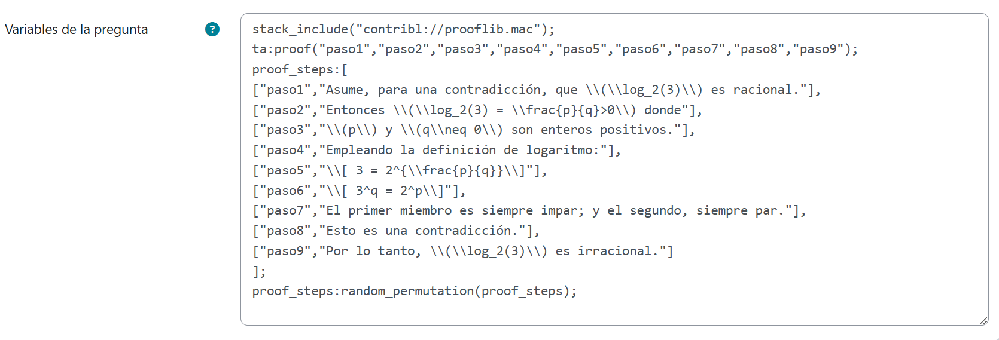
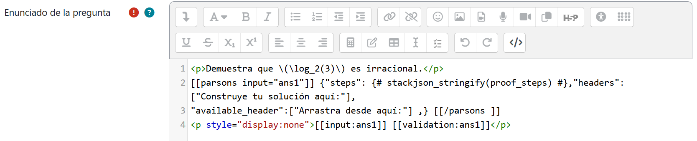
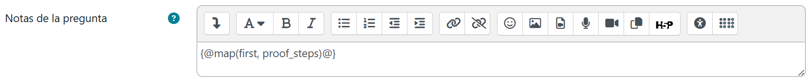
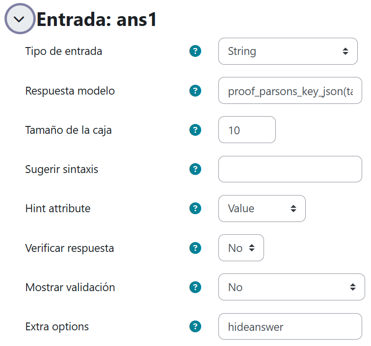
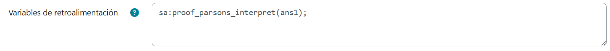
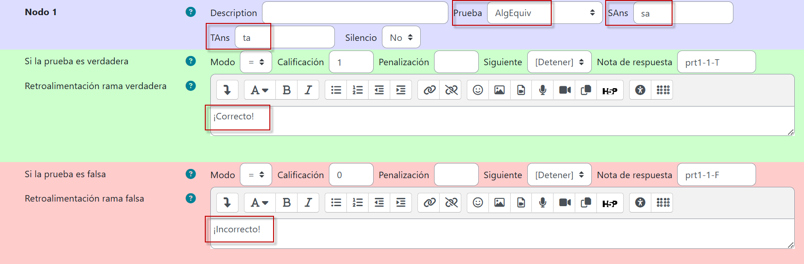

La naturaleza de las demostraciones en STACK
Una demostración matemática es una justificación deductiva de una afirmación; un "registro verificable del razonamiento". En ocasiones, suele ser también para los alumnos una "receta matemática" o, en otras palabras, un conjunto de instrucciones para llevar a cabo un procedimiento.
STACK admite la representación y visualización de demostraciones matemáticas en forma de árboles, con nodos de texto que corresponden a las oraciones o cláusulas individuales de la demostración. Los objetivos de representar demostraciones como árboles de cadenas de texto son los siguientes:
- Gestionar las cadenas de texto que forman parte de una demostración escrita tradicional.
- Separar la estructura general de la demostración de los detalles de cada paso.
- Separar el contenido de su presentación (siguiendo principios bien establecidos tanto en LaTeX como en HTML).
- Separar el contenido de la justificación, la explicación y la narrativa.
- Ayudar a los docentes a presentar las demostraciones de manera coherente dentro de su curso.
- Facilitar a los docentes la redacción de demostraciones correctas.
- Proporcionar mecanismos para alterar dinámicamente el nivel de detalle, por ejemplo, ocultando o revelando pasos y narraciones.
- Ofrecer mecanismos para evaluar soluciones a problemas de tipo Parson y proporcionar retroalimentación a los estudiantes.
La presentación tradicional de las demostraciones suele mezclar todos estos aspectos, lo que puede generar confusión en los alumnos. Al separar estos aspectos, se proporciona un mayor control y más oportunidades para elegir cuándo y cómo generar la carga cognitiva adecuada para los estudiantes. Abonar a ello constituye la meta de STACK en este contexto, más allá de la verificación automática de demostraciones.
Problemas de tipo Parson
Los problemas de Parson requieren que los estudiantes ensamblen bloques preescritos (generalmente con texto) en el orden correcto, arrastrándolos dentro de una estructura en forma de árbol. Por ejemplo, para construir correctamente una demostración matemática.
La autoría de un problema de Parson implica varias partes:
- Definir las cadenas de texto y crear un área de arrastrar y soltar usando el bloque de Parson.
- Vincular el bloque de Parson a una entrada de STACK (entrada de cadena de texto).
- Evaluar la respuesta del estudiante y proporcionar retroalimentación significativa de manera automática
Los problemas de Parson permiten a los estudiantes centrarse en la estructura y el significado, proporcionando todas las palabras correctas pero en un orden inicial incorrecto. Se sabe que el aprendizaje de la demostración matemática es particularmente difícil para la mayoría de los estudiantes. El andamiaje que ofrecen los problemas de Parson ha demostrado ser muy útil en matemáticas discretas. Esto puede deberse al efecto de inversión del experto, un fenómeno bien documentado según el cual lo que es útil para un principiante puede ser muy diferente, o incluso opuesto, a lo que es útil para un experto. Incluso cuando el objetivo final de la instrucción es la escritura independiente de demostraciones, es muy probable que los problemas de Parson desempeñen un papel importante en el aprendizaje formativo hacia esa meta.
El siguiente es un ejemplo sencillo de una pregunta de tipo Parson para hacer una demostración directa con un solo orden de solución. Se pretende que el alumno demuestre que \(\log_{2}3\) es irracional.
En las Variables de la pregunta capturaremos el siguiente código. No te angusties, pues puedes descargarlo para copiarlo y pegarlo al final de esta sección.

La biblioteca opcional prooflib.mac contiene muchas funciones útiles para trabajar con las respuestas de los estudiantes que representan demostraciones.
La variable proof_steps almacena todas las claves que se mostrarán como cadenas de texto. Cada paso está indexado mediante un identificador de clave, que se usa para hacer referencia a los pasos a lo largo de la pregunta (por ejemplo, al construir la respuesta modelo).
Podemos aleatorizar el orden en el que se mostrarán las cadenas en la página utilizando random_permutation.
La variable ta almacena la respuesta del profesor, que es una función de construcción de demostraciones proof. Los argumentos de esta función son claves de cadena, por ejemplo, "paso6", que hacen referencia a líneas dentro de la demostración. El profesor espera que estas líneas aparezcan en este orden.
Ahora, en el Enunciado de la pregunta, colocaremos un bloque Parson. Para ello, primero habilitaremos la Vista HTML del editor y capturaremos el siguiente código:

Como puede observarse, dentro del encabezado del bloque Parson, incluimos input="ans1", donde ans1 es el identificador de la entrada. Al final del código, hemos empleado "display:none" como estilo del párrafo para ocultar el campo de entrada de respuesta, ya que en este caso no tiene sentido mantenerlo visible.
Ahora, debido a la aleatorización de los pasos de la demostración, necesitamos agregar una Nota de la pregunta que simplemente indique el orden de las claves es el siguiente:

En Entrada, haremos las siguientes capturas y selecciones (en Respuesta modelo, capturamos proof_parsons_key_json(ta, [])):

En Variables de retroalimentación, definiremos sa del siguiente modo:

Lo anterior porque la respuesta del estudiante será una cadena JSON, pero necesitamos interpretar qué cadenas se han utilizado y en qué orden, de lo cual se encarga la función proof_parsons_interpret.
Finalmente, configuramos el Árbol de respuestas potenciales bajo una prueba de equivalencia algebraica de la siguiente forma:

El resultado de este trabajo, luego de guardar los cambios, es este: